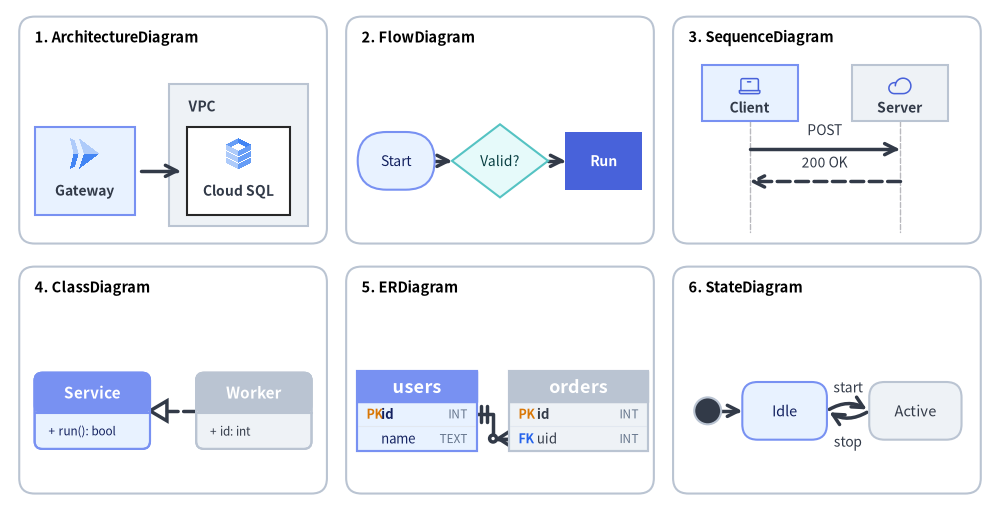
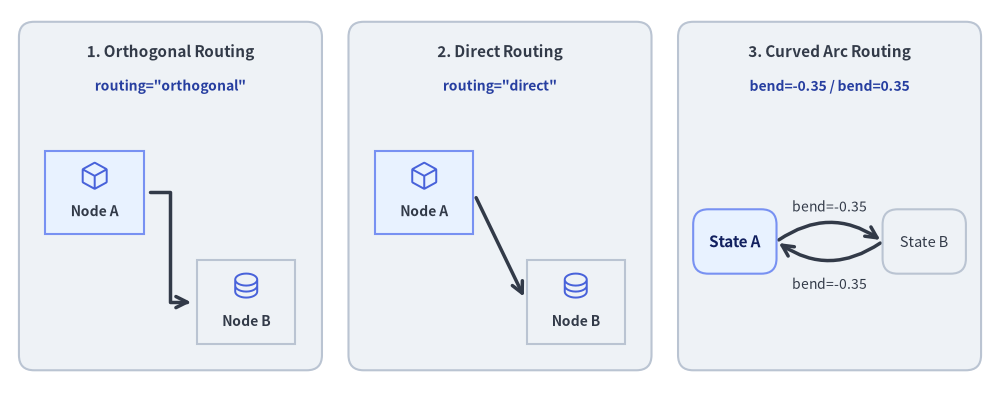
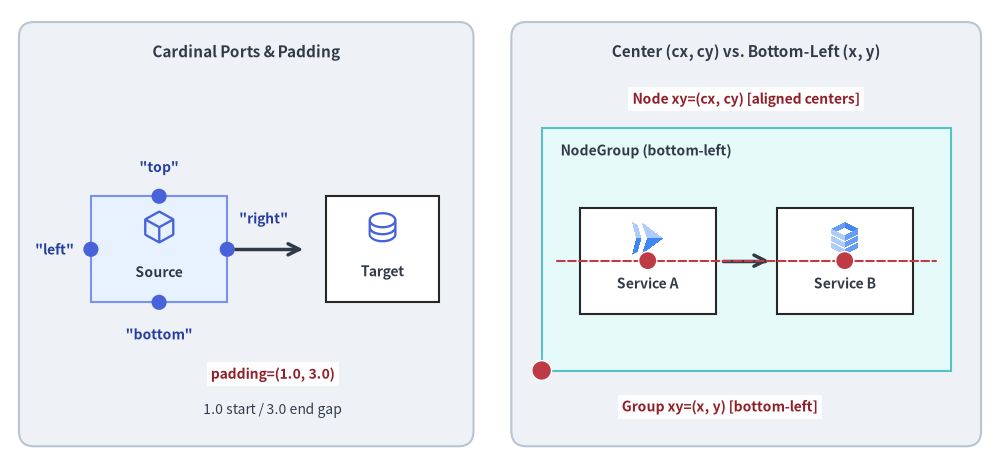
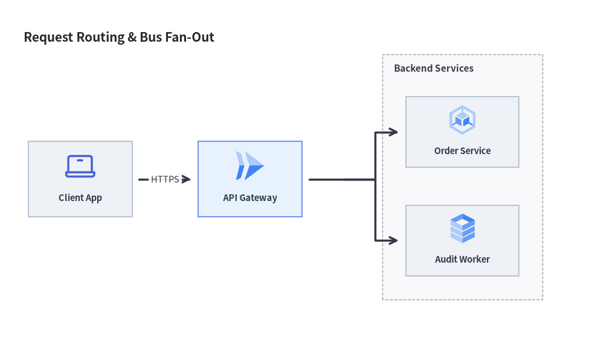

ダイアグラム概要と汎用ルーティングエンジン
Drawlib の drawlib.diagrams モジュールは、クラウドアーキテクチャ、ワークフローのフローチャート、相互作用を表すシーケンス図、UML クラス階層、リレーショナルデータベーススキーマ、およびステートマシンを描画するための宣言的な Pure Python 可視化スイートを提供します。
6 つのダイアグラムエンジンすべてが、ドメイン固有の視覚記法と決定論的な (x, y) 座標制御、および汎用的な Connectable ルーティングエンジンを組み合わせています。

Source Code
from drawlib.canvas import save, setup
from drawlib.diagrams.architecture import ArchitectureDiagram, GcpIcon, Node, NodeGroup
from drawlib.diagrams.class_diagram import ClassDiagram, ClassNode
from drawlib.diagrams.er import ERDiagram, Entity
from drawlib.diagrams.flow import Decision, FlowDiagram, Process, Start
from drawlib.diagrams.sequence import Participant, PhosphorIcon, SequenceDiagram
from drawlib.diagrams.state import InitialState, State, StateDiagram
from drawlib.shapes import rectangle
from drawlib.styles import Colors, Styles
from drawlib.text import text
setup(width=130, height=66)
card_style = Styles.Neutral.patch(shape_r=2.0, shape_line_color=Colors.Gray4, shape_fill_color=Colors.White)
title_style = Styles.BlackBold.patch(text_size=10.5, halign="left")
cards = [
(22.5, 49.0, "1. ArchitectureDiagram"),
(65.0, 49.0, "2. FlowDiagram"),
(107.5, 49.0, "3. SequenceDiagram"),
(22.5, 16.5, "4. ClassDiagram"),
(65.0, 16.5, "5. ERDiagram"),
(107.5, 16.5, "6. StateDiagram"),
]
for cx, cy, title in cards:
rectangle((cx, cy), width=40.0, height=29.5, style=card_style)
text((cx - 18.0, cy + 12.0), title, style=title_style)
# 1. ArchitectureDiagram (Top-Left, scale=1.0)
arch = ArchitectureDiagram(
node_style=Styles.Primary,
node_text_style=Styles.DarkBold.patch(text_size=10.0),
edge_style=Styles.DarkBold,
edge_text_style=Styles.Dark.patch(text_size=10.0),
node_card_style=Styles.PrimaryNeutral,
)
grp = arch.add(
NodeGroup(
title="VPC",
width=18.0,
height=18.5,
style=Styles.Neutral,
text_style=Styles.DarkBold.patch(text_size=10.0, halign="left", valign="top"),
),
xy=(18.5, 1.5),
)
n_api = arch.add(Node("Gateway", width=13.0, height=11.5, icon=GcpIcon.CLOUD_RUN, icon_size=4.5), xy=(7.5, 8.7))
n_db = grp.add(
Node("Cloud SQL", width=13.5, height=11.5, icon=GcpIcon.CLOUD_SQL, icon_size=4.5, card_style=Styles.White),
xy=(9.0, 7.2),
)
arch.connect(n_api, n_db, padding=0.8)
arch.draw(xy=(3.5, 35.0), scale=1.0)
# 2. FlowDiagram (Top-Center, scale=1.0)
flow = FlowDiagram(
node_style=Styles.Neutral.patch(text_size=10.0),
edge_style=Styles.DarkBold,
edge_text_style=Styles.Dark.patch(text_size=10.0),
)
f_start = flow.add(
Start("Start", width=10.0, height=7.5, style=Styles.PrimaryNeutral.patch(text_size=10.0)),
xy=(5.5, 9.5),
)
f_dec = flow.add(
Decision("Valid?", width=12.5, height=9.5, style=Styles.SecondaryNeutral.patch(text_size=10.0)),
xy=(19.0, 9.5),
)
f_proc = flow.add(
Process("Run", width=10.0, height=7.5, style=Styles.PrimaryFlat, text_style=Styles.WhiteBold.patch(text_size=10.0)),
xy=(32.5, 9.5),
)
f_start.connect(f_dec)
f_dec.connect(f_proc)
flow.draw(xy=(46.0, 35.5), scale=1.0)
# 3. SequenceDiagram (Top-Right, scale=1.0)
seq = SequenceDiagram(
node_style=Styles.Primary,
node_text_style=Styles.DarkBold.patch(text_size=10.0),
edge_style=Styles.DarkBold,
edge_text_style=Styles.Dark.patch(text_size=10.0),
node_card_style=Styles.PrimaryNeutral,
col_width=19.5,
step_y=4.2,
margin=0.2,
)
p_cli = seq.add(Participant("Client", width=12.5, height=7.2, icon=PhosphorIcon.LAPTOP, icon_size=3.2))
p_srv = seq.add(Participant("Server", width=12.5, height=7.2, icon=PhosphorIcon.CLOUD, icon_size=3.2, card_style=Styles.Neutral))
p_cli.request(p_srv, "POST")
p_srv.reply(p_cli, "200 OK")
seq.draw(xy=(91.0, 33.6), scale=1.0)
# 4. ClassDiagram (Bottom-Left, scale=1.0)
cd = ClassDiagram(
node_style=Styles.Neutral,
edge_style=Styles.DarkBold,
edge_text_style=Styles.Dark.patch(text_size=10.0),
)
c_base = cd.add(ClassNode(name="Service", width=15.0, style=Styles.PrimaryNeutral), xy=(8.5, 9.5))
c_base.add_method("run", return_type="bool")
c_impl = cd.add(ClassNode(name="Worker", width=15.0, style=Styles.Neutral), xy=(29.5, 9.5))
c_impl.add_attribute("id", type="int")
cd.connect(c_impl, c_base, relationship_type="realization", start_side="left", end_side="right")
cd.draw(xy=(3.5, 3.0), scale=1.0)
# 5. ERDiagram (Bottom-Center, scale=1.0)
er = ERDiagram(
node_style=Styles.Neutral,
edge_style=Styles.DarkBold,
edge_text_style=Styles.Dark.patch(text_size=10.0),
)
e_user = er.add(Entity(name="users", width=15.5, style=Styles.PrimaryNeutral), xy=(8.2, 9.0))
e_user.add_column("id", type="INT", pk=True)
e_user.add_column("name", type="TEXT")
e_ord = er.add(Entity(name="orders", width=18.0, style=Styles.Neutral), xy=(29.2, 9.0))
e_ord.add_column("id", type="INT", pk=True)
e_ord.add_column("uid", type="INT", fk=True)
e_user.connect(e_ord, cardinality="1:*", start_side="right", end_side="left", start_column="id", end_column="uid")
er.draw(xy=(46.0, 3.5), scale=1.0)
# 6. StateDiagram (Bottom-Right, scale=1.0)
sd = StateDiagram(
node_style=Styles.Neutral.patch(text_size=10.5),
edge_style=Styles.DarkBold,
edge_text_style=Styles.Dark.patch(text_size=10.0),
)
s_init = sd.add(InitialState(style=Styles.Dark), xy=(3.0, 9.0))
s_idle = sd.add(
State("Idle", shape="box", width=11.0, height=7.5, style=Styles.PrimaryNeutral.patch(text_size=10.5)),
xy=(13.0, 9.0),
)
s_run = sd.add(
State("Active", shape="box", width=12.0, height=7.5, style=Styles.Neutral.patch(text_size=10.5)),
xy=(30.0, 9.0),
)
sd.connect(s_init, s_idle)
sd.connect(s_idle, s_run, event="start", bend=-0.32, start_side="top_right", end_side="top_left")
sd.connect(
s_run,
s_idle,
event="stop",
bend=-0.32,
start_side="bottom_left",
end_side="bottom_right",
text_style=Styles.Dark.patch(text_size=10.0, valign="top"),
)
sd.draw(xy=(89.0, 3.5), scale=1.0)
save()
Graphviz や PlantUML のような外部ツール、あるいはラベルを少し変更しただけで配置が大きく崩れてしまう不透明な自動レイアウトヒューリスティックとは異なり、drawlib.diagrams は以下の特長を備えています。
- 確定的な座標制御: 要素の位置を精密に指定でき、境界でのクリッピング、線のオフセット、矢印の向き合わせは Drawlib が自動で処理します。
- 統一された
Connectableインターフェース: ノード、エンティティ、クラス、境界ボックス、ジャンクションが共通のプロトコルを実装しており、直交配線・直線配線・曲線配線を一貫した方法で扱えます。 - 豊富なベクターアイコン・クラウドアイコン: 259 種類の公式 Google Cloud Platform (
GcpIcon) アイコンや 1,531 種類の Phosphor (PhosphorIcon) アイコンをはじめとする組み込みアイコンに標準対応しています。 - ネイティブなテーマ統合: すべてのダイアグラムで標準の
Styles、Colors、およびFontモデルをそのまま利用できます。
自動座標レイアウトをお探しですか？
トポロジ関係（node、edge、cluster）からg.get_layout()によって(x, y)座標、コンテナ境界ボックス、エッジ中継点を自動算出してからdrawlib.diagramsやdrawlib.shapesで描画したい場合は、第 7 章: 自動レイアウトグラフ (drawlib.graph) を参照してください。
1. 6 種類のテクニカルダイアグラムエンジン (drawlib.diagrams)
| カテゴリ | クラス名 | インポート元モジュール | 主な用途 | 詳細ガイド |
|---|---|---|---|---|
| クラウド・アーキテクチャ | ArchitectureDiagram |
drawlib.diagrams.architecture |
マイクロサービス、VPC 境界、クラウドアイコントポロジ | アーキテクチャ図 |
| ワークフロー・業務プロセス | FlowDiagram |
drawlib.diagrams.flow |
ISO 5807 フローチャート、部門横断スイムレーン | フロー図 |
| API シーケンス・プロトコル | SequenceDiagram |
drawlib.diagrams.sequence |
時系列メッセージのライフライン、条件フレーム | シーケンス図 |
| オブジェクト指向構造 | ClassDiagram |
drawlib.diagrams.class_diagram |
UML 2.0 の 3 区画クラスカード、6 種の UML リレーションシップ | UML クラス図 |
| リレーショナルスキーマ | ERDiagram |
drawlib.diagrams.er |
Crow's Foot 物理 DB スキーマ、PK/FK カラム単位アンカー | ER 図 |
| ステートチャート・オートマトン | StateDiagram |
drawlib.diagrams.state |
有限オートマトン、内部アクション区画、曲線遷移アーク | ステートマシン図 |
2. 汎用接続エンジン (Connectable)
すべてのダイアグラム要素（ノード、エンティティ、クラス、境界グループ、ジャンクション）は共通の Connectable プロトコルを実装しています。

Source Code
from drawlib.canvas import save, setup
from drawlib.diagrams.architecture import ArchitectureDiagram, Node, PhosphorIcon
from drawlib.diagrams.state import State, StateDiagram
from drawlib.shapes import rectangle
from drawlib.styles import Colors, Styles
from drawlib.text import text
setup(width=132, height=52)
panel_style = Styles.Neutral.patch(shape_r=2.0, shape_line_color=Colors.Gray4)
header_style = Styles.DarkBold.patch(text_size=11.0)
code_style = Styles.DarkBold.patch(text_size=10.0, text_color=Colors.Primary5)
# Panel 1: Orthogonal Z-Bend
rectangle((22.5, 26), width=40, height=46, style=panel_style)
text((22.5, 45.0), "1. Orthogonal Routing", style=header_style)
text((22.5, 40.5), 'routing="orthogonal"', style=code_style)
d1 = ArchitectureDiagram(
node_style=Styles.Primary,
node_text_style=Styles.DarkBold.patch(text_size=10.0),
edge_style=Styles.DarkBold,
edge_text_style=Styles.Dark.patch(text_size=10.0),
node_card_style=Styles.PrimaryNeutral,
)
a1 = d1.add(Node("Node A", width=13, height=11, icon=PhosphorIcon.CUBE, icon_size=4.2), xy=(9.5, 24.0))
b1 = d1.add(
Node("Node B", width=13, height=11, icon=PhosphorIcon.DATABASE, icon_size=4.2, card_style=Styles.Neutral),
xy=(29.5, 9.5),
)
d1.connect(a1, b1, routing="orthogonal", padding=0.8)
d1.draw(xy=(3.0, 2.5))
# Panel 2: Direct Straight
rectangle((66.0, 26), width=40, height=46, style=panel_style)
text((66.0, 45.0), "2. Direct Routing", style=header_style)
text((66.0, 40.5), 'routing="direct"', style=code_style)
d2 = ArchitectureDiagram(
node_style=Styles.Primary,
node_text_style=Styles.DarkBold.patch(text_size=10.0),
edge_style=Styles.DarkBold,
edge_text_style=Styles.Dark.patch(text_size=10.0),
node_card_style=Styles.PrimaryNeutral,
)
a2 = d2.add(Node("Node A", width=13, height=11, icon=PhosphorIcon.CUBE, icon_size=4.2), xy=(9.5, 24.0))
b2 = d2.add(
Node("Node B", width=13, height=11, icon=PhosphorIcon.DATABASE, icon_size=4.2, card_style=Styles.Neutral),
xy=(29.5, 9.5),
)
d2.connect(a2, b2, routing="direct", padding=0.8)
d2.draw(xy=(46.5, 2.5))
# Panel 3: Curved Arc (bend)
rectangle((109.5, 26), width=40, height=46, style=panel_style)
text((109.5, 45.0), "3. Curved Arc Routing", style=header_style)
text((109.5, 40.5), "bend=-0.35 / bend=0.35", style=code_style)
sd = StateDiagram(
node_style=Styles.PrimaryNeutral.patch(text_size=10.5),
edge_style=Styles.DarkBold,
edge_text_style=Styles.Dark.patch(text_size=10.0),
)
s_a = sd.add(State("State A", shape="box", width=11.0, height=8.5), xy=(7.5, 18.0))
s_b = sd.add(
State("State B", shape="box", width=11.0, height=8.5, style=Styles.Neutral.patch(text_size=10.5)),
xy=(32.5, 18.0),
)
sd.connect(
s_a,
s_b,
label="bend=-0.35",
bend=-0.35,
start_side="top_right",
end_side="top_left",
)
sd.connect(
s_b,
s_a,
label="bend=-0.35",
bend=-0.35,
start_side="bottom_left",
end_side="bottom_right",
text_style=Styles.Dark.patch(text_size=10.0, valign="top"),
)
sd.draw(xy=(89.5, 2.0))
save()
接続ルーティング戦略
routing="orthogonal"（Architecture・Flow・Class・ER のデフォルト）: 整然とした直角の Z 字ベンドおよび L 字ベンドを計算し、可能な限りノードの境界ボックスとの重なりを回避します。routing="direct": 始点アンカーと終点アンカーの間をユークリッド直線で結び、各要素の外周境界できれいにクリップします。bend=float（ステートマシン図で広く使用）: ノード間に二次ベジェ曲線または円弧を描画します。正の値は左／上方向、負の値は右／下方向へ湾曲するため、双方向の遷移も重ならずに表現できます。
接続辺（ポート）とエッジパディング
start_side/end_side:"left"、"right"、"top"、"bottom"、または"auto"（ユークリッド最短距離で自動解決。なおStateDiagramでは対角方向の"top_left"、"top_right"、"bottom_left"、"bottom_right"も指定可能）を明示的に指定できます。padding:padding=1.5: エッジ端点とノード外周の間に 1.5 単位の隙間を設けます。padding=(1.0, 3.0): 非対称なパディング（始点側 1.0、終点側 3.0）を設定します。
座標基準の原則（中心 center vs. 左下 bottom-left）
drawlib.diagrams 全体における座標アンカーの規則を押さえておくことで、要素を正確に整列できます。
- ノードおよびカードの配置（中心
center(cx, cy)）:d.add(item, xy=(cx, cy))は、すべての頂点カード・記号の幾何学的中心(cx, cy)を配置します。対象はNode（ArchitectureDiagram）、FlowNode/Start/End/Process/Decision/Data（FlowDiagram）、ClassNode（ClassDiagram）、Entity（ERDiagram）、およびState/StateNodeBase（StateDiagram）です。水平または垂直に並べる 2 つのノードに同じy座標またはx座標を指定すると、中心同士が一直線上に揃います。 - グループ原点およびダイアグラム描画位置（左下
bottom-left(x, y)）:d.draw(xy=(x, y), *, scale=1.0)は、常にキャンバス上の(x, y)をダイアグラムの左下 (bottom-left) 原点として描画します。ArchitectureDiagramにおけるd.add(group, xy=(x, y))は、NodeGroupの左下 (bottom-left) ローカル原点を設定します（NodeGroupに固定のwidthとheightを指定した場合は[x, x + width] × [y, y + height]の領域を占め、自動サイズ計算時はgroup.add(child, xy=...)に渡す子要素座標がgroup.xyからの相対座標になります）。

Source Code
from drawlib.canvas import save, setup
from drawlib.diagrams.architecture import ArchitectureDiagram, GcpIcon, Node, NodeGroup, PhosphorIcon
from drawlib.lines import line
from drawlib.shapes import circle, rectangle
from drawlib.styles import Colors, Styles
from drawlib.text import text
setup(width=132, height=62)
panel_style = Styles.Neutral.patch(shape_r=2.0, shape_line_color=Colors.Gray4)
header_style = Styles.DarkBold.patch(text_size=11.0)
mono_style = Styles.DarkBold.patch(text_size=10.0, text_color=Colors.Primary5)
anchor_dot_style = Styles.DangerFlat.patch(shape_line_color=Colors.White, shape_line_width=1.0)
anchor_lbl_style = Styles.DarkBold.patch(
text_size=10.0,
text_color=Colors.Danger5,
text_bg_fill_color=(255, 255, 255, 0.9),
)
# Left Panel: 4 Cardinal Attachment Ports & Asymmetric Padding
rectangle((32.5, 31), width=60, height=56, style=panel_style)
text((32.5, 55.0), "Cardinal Ports & Padding", style=header_style)
d_ports = ArchitectureDiagram(
node_style=Styles.Primary,
node_text_style=Styles.DarkBold.patch(text_size=10.0),
edge_style=Styles.DarkBold,
edge_text_style=Styles.Dark.patch(text_size=10.0),
node_card_style=Styles.PrimaryNeutral,
)
src = d_ports.add(Node("Source", width=18, height=14, icon=PhosphorIcon.CUBE, icon_size=4.8), xy=(21.0, 29.0))
dst = d_ports.add(
Node("Target", width=15, height=14, icon=PhosphorIcon.DATABASE, icon_size=4.8, card_style=Styles.White),
xy=(50.5, 29.0),
)
d_ports.connect(src, dst, padding=(1.0, 3.0))
d_ports.draw(xy=(0.0, 0.0))
# Port dots on Source Card (center at (21, 29), size 18x14 -> top=(21,36), bottom=(21,22), left=(12,29), right=(30,29))
for px, py in [(21, 36), (21, 22), (12, 29), (30, 29)]:
circle((px, py), radius=1.0, style=Styles.PrimaryFlat)
text((21, 39.8), '"top"', style=mono_style)
text((21, 17.8), '"bottom"', style=mono_style)
text((7.2, 29.0), '"left"', style=mono_style)
text((34.8, 33.0), '"right"', style=mono_style)
# Highlight asymmetric padding=(1.0, 3.0)
text((36.0, 12.5), "padding=(1.0, 3.0)", style=anchor_lbl_style)
text((36.0, 7.8), "1.0 start / 3.0 end gap", style=Styles.Dark.patch(text_size=10.0))
# Right Panel: Node Center (cx, cy) vs. NodeGroup Bottom-Left (x, y)
rectangle((98.5, 31), width=62, height=56, style=panel_style)
text((98.5, 55.0), "Center (cx, cy) vs. Bottom-Left (x, y)", style=header_style)
d_orig = ArchitectureDiagram(
node_style=Styles.Primary,
node_text_style=Styles.DarkBold.patch(text_size=10.0),
edge_style=Styles.DarkBold,
edge_text_style=Styles.Dark.patch(text_size=10.0),
node_card_style=Styles.White,
)
grp = d_orig.add(
NodeGroup(
title="NodeGroup (bottom-left)",
width=54.0,
height=32.0,
style=Styles.SecondaryNeutral,
text_style=Styles.DarkBold.patch(text_size=10.0, halign="left", valign="top"),
),
xy=(71.5, 13.0),
)
n1 = grp.add(Node("Service A", width=18, height=14, icon=GcpIcon.CLOUD_RUN, icon_size=4.8), xy=(14.0, 14.5))
n2 = grp.add(Node("Service B", width=18, height=14, icon=GcpIcon.CLOUD_SQL, icon_size=4.8), xy=(40.0, 14.5))
d_orig.connect(n1, n2, padding=1.0)
d_orig.draw(xy=(0.0, 0.0))
# Shared horizontal Y alignment guide line through node centers (y = 13 + 14.5 = 27.5)
line((73.5, 27.5), (123.5, 27.5), style=Styles.DangerDashed.patch(shape_line_width=1.2))
# Red anchor dots for NodeGroup bottom-left (71.5, 13.0) and Node centers (85.5, 27.5), (111.5, 27.5)
circle((71.5, 13.0), radius=1.3, style=anchor_dot_style)
text((95.0, 8.2), "Group xy=(x, y) [bottom-left]", style=anchor_lbl_style)
circle((85.5, 27.5), radius=1.2, style=anchor_dot_style)
circle((111.5, 27.5), radius=1.2, style=anchor_dot_style)
text((98.5, 48.8), "Node xy=(cx, cy) [aligned centers]", style=anchor_lbl_style)
save()
3. Junction による中継点とバスライン分岐
Junction はキャンバス上のサイズゼロの座標点 (x, y) を表します。これを用いることで以下の配線が可能になります。
- バスラインの分岐: 1 本の接続線を複数の下流ターゲットへ分岐します（
ArchitectureDiagramやFlowDiagramではnode.fork([target1, target2], at_x=...)のショートハンドも利用可能です）。 - 経路の合流: 複数の上流エラー経路や完了経路を 1 つの後続ノードへ統合します。
- 動的な中継点の挿入:
edge.add_point(xy)を呼び出すと、エッジ上の中間座標を再利用可能なJunctionに変換できます。
from drawlib.canvas import save, setup
from drawlib.diagrams.architecture import ArchitectureDiagram, GcpIcon, Node, NodeGroup, PhosphorIcon
from drawlib.styles import Styles
setup(width=128, height=74)
d = ArchitectureDiagram(
node_style=Styles.Primary,
node_text_style=Styles.DarkBold.patch(text_size=10.5),
edge_style=Styles.DarkBold,
edge_text_style=Styles.Dark.patch(text_size=10.5),
node_card_style=Styles.Neutral,
title="Request Routing & Bus Fan-Out",
)
client = d.add(Node("Client App", width=22, height=16, icon=PhosphorIcon.LAPTOP, icon_size=7.0), xy=(13.0, 32.0))
gateway = d.add(
Node("API Gateway", width=22, height=16, icon=GcpIcon.CLOUD_RUN, icon_size=7.0, card_style=Styles.PrimaryNeutral),
xy=(49.0, 32.0),
)
cluster = d.add(
NodeGroup(
title="Backend Services",
padding=5.0,
text_style=Styles.DarkBold.patch(text_size=11.0, halign="left", valign="top"),
),
xy=(77.0, 6.0),
)
svc_a = cluster.add(
Node("Order Service", width=24, height=15, icon=GcpIcon.GOOGLE_KUBERNETES_ENGINE, icon_size=7.0),
xy=(17.0, 36.0),
)
svc_b = cluster.add(Node("Audit Worker", width=24, height=15, icon=GcpIcon.CLOUD_SQL, icon_size=7.0), xy=(17.0, 13.0))
d.connect(client, gateway, label="HTTPS", padding=1.5)
gateway.fork([svc_a, svc_b], at_x=69.0, padding=1.5)
d.draw(xy=(4.0, 4.0))
save()

4. 共通コンポーネントライフサイクル（show・ミュータブル要素・サイズ取得・scale）
6 つすべてのダイアグラムクラス（ArchitectureDiagram、FlowDiagram、SequenceDiagram、ClassDiagram、ERDiagram、StateDiagram）は、静止画およびマルチフレーム描画に対応した共通のライフサイクルを備えています（詳細はダイアグラムのアニメーションを参照してください）。
- 表示制御 (
show: bool = True):- すべての要素コンストラクタ（
Node、NodeGroup、FlowNode、Lane、Participant、ParticipantGroup、State、ClassNode、Entity）および登録メソッド（d.add(..., show=True)、.connect(..., show=True)）はshow: bool = Trueを受け取ります。 - 固定レイアウト保証: 非表示要素（
show=False）もバウンディングボックス、グループ、レーン、ライフラインの座標計算には引き続き含まれるため、.showを切り替えても表示中の要素の位置がずれたり跳ねたりすることはありません。 - 接続エッジおよび未接続
Junctionの自動非表示: 接続線（ArchitectureDiagramのEdge、FlowDiagramのFlowEdge、SequenceDiagramのMessage、ClassDiagramのClassRelationship、ERDiagramのRelationship、StateDiagramのStateTransition）のいずれかの端点がshow=False（または非表示グループ内）である場合、draw()時にその接続線も自動的にスキップされます。さらに、中間のJunctionに表示対象の下流パスが 1 つもない場合、その上流側の線分も自動的に非表示になります。
- すべての要素コンストラクタ（
- ミュータブルな要素インスタンス:
d.add(...)や.connect(...)は登録された要素インスタンス（Node、Edge、FlowNode、FlowEdge、Participant、Message、Block、Note、ClassNode、ClassRelationship、Entity、Relationship、State、StateTransition）を返すため、アニメーションの各フレーム間で.show、.style、.text_styleをインプレースで変更できます。
- ダイアグラムのサイズ・境界ボックス取得 (
get_size()/get_bounds()):d.get_size() -> tuple[float, float]: 全 6 種類のダイアグラムクラスでサポートされており、自動計算または明示指定されたダイアグラムの(width, height)（キャンバス単位）を返します。d.get_bounds() -> tuple[float, float, float, float]:ClassDiagramおよびStateDiagramでサポートされており、登録された全ノード（およびStateDiagramの自己遷移ループ）を囲む最小外接矩形(min_x, min_y, max_x, max_y)を返します。
- 比例スケーリングと平行移動 (
draw(xy=(0.0, 0.0), *, scale: float = 1.0)):- すべてのダイアグラムの
draw(xy=(0.0, 0.0), *, scale: float = 1.0)は、ダイアグラム全体をxyだけ平行移動し、すべてのノード座標、幅・高さ、アイコンサイズ、線幅、フォントサイズをscale倍に比例スケーリングして描画します。
- すべてのダイアグラムの
5. drawlib.diagrams と drawlib.graph の使い分けと連携
アーキテクチャ図やワークフロー図を作成する際は、目的に応じて以下のように使い分け・連携できます。
- ドメイン固有の視覚記法と確定的な座標制御を行いたい場合は、本章の
drawlib.diagrams（クラウドアイコンカード、ISO フローチャート＋スイムレーン、UML シーケンスのライフライン、3 区画の UML クラスカード、Crow's Foot ER テーブル、UML ステートチャート）を使用します。 - トポロジ関係（
ArchitectureGraph、LayerGraph、TreeGraph、RadialGraph、GridGraph）から自動的に座標を算出したい場合は、第 7 章のdrawlib.graphと組み合わせます。layout = g.get_layout(width=..., height=...)（または座標確認用のprint(layout)）を呼び出し、算出されたc.bottom_left、c.local_bottom_left、n.xy、n.local_xyをそのままArchitectureDiagram、FlowDiagram、またはdrawlib.shapesに渡して描画できます。
6. 各ダイアグラムの詳細ガイド
各ダイアグラムエンジンの専用ガイドを参照してください。
- アーキテクチャ図: マイクロサービス、VPC 境界、クラウドアイコントポロジ（
GcpIcon、PhosphorIconなど）。 - フロー図: ISO 5807 フローチャート記号と、垂直・水平のマルチレーンワークフロー。
- シーケンス図: 時系列の API 連携、メッセージ種別、アクティベーションバー、
with条件フレーム。 - UML クラス図: 3 区画のクラスカードと 6 種類の標準 UML リレーションシップ。
- ER 図: Information Engineering（Crow's Foot）記法とカラム単位アンカーによるリレーショナル DB スキーマ。
- ステートマシン図: UML ステートチャート、内部アクション区画、擬似状態、曲線遷移アーク。